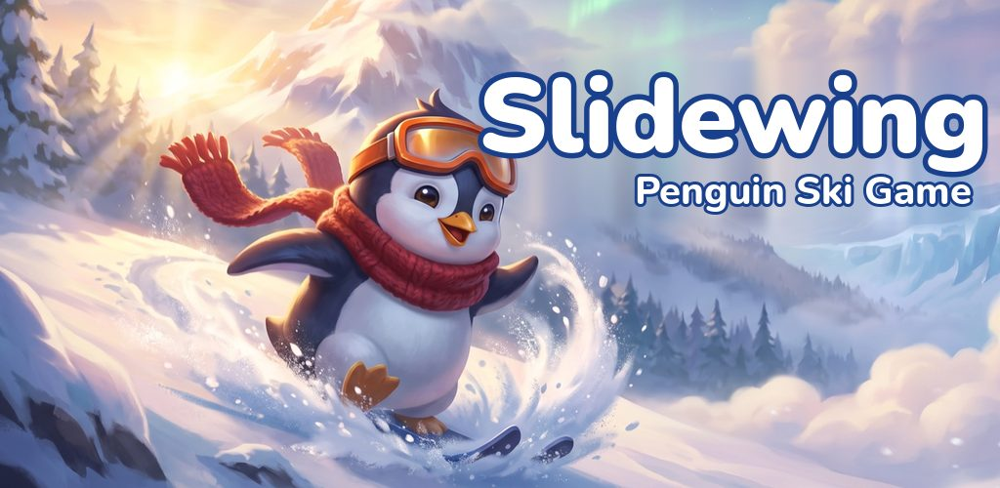
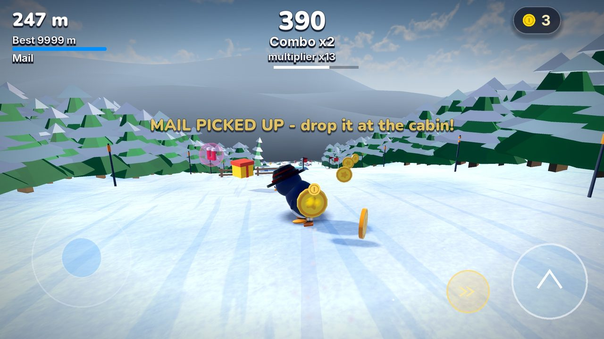
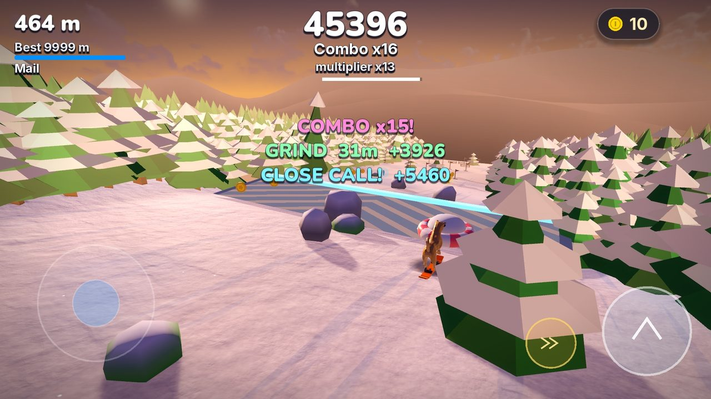
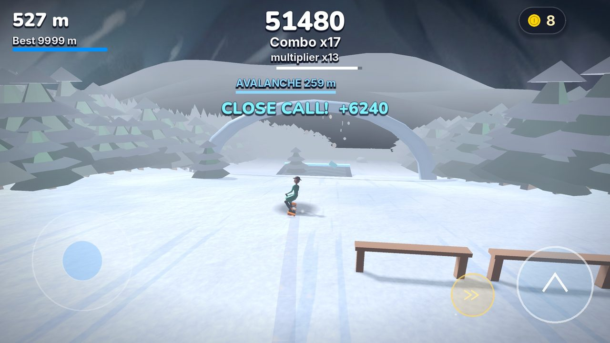
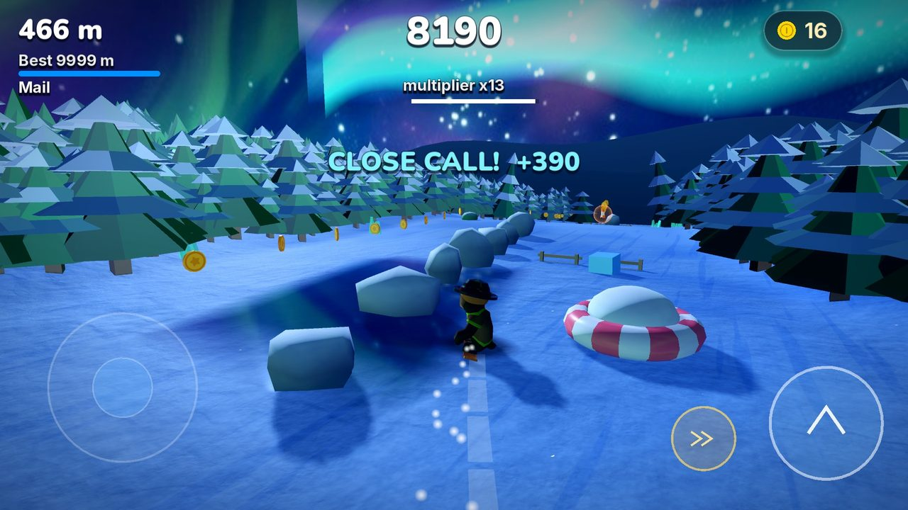
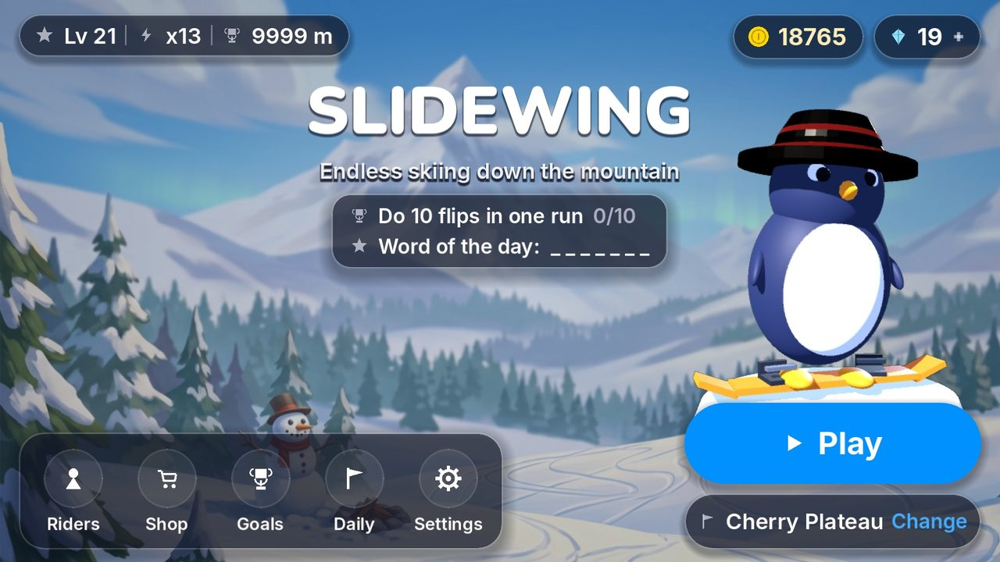
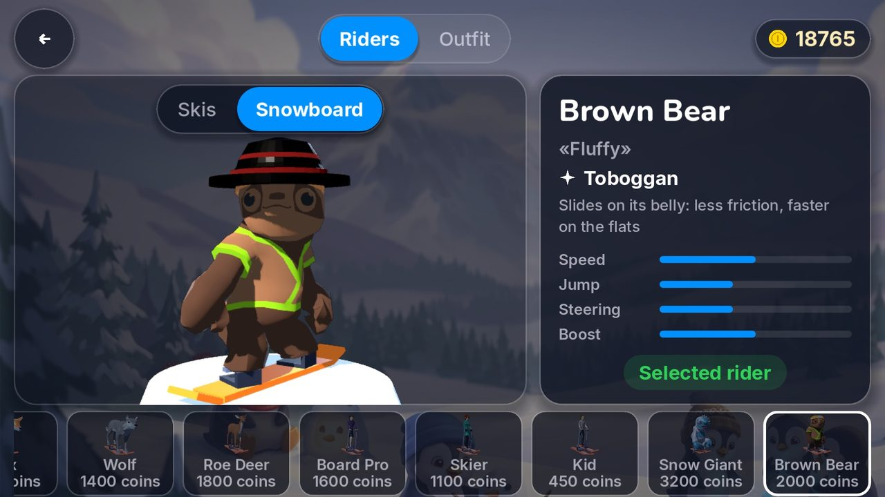

SlidewingPenguin ski game: slide, flip and outrun the avalanche
Ski down snowy mountains as a penguin, carve turns, launch off kickers and land flips. An endless downhill skiing and snowboarding game with real ski physics, for kids and the whole family, and it plays offline.
- Plays offline
- 6+ · PEGI 3
- English and Turkish
- Android

Skiing that feels real
Real ski physics
Skis turn by edging; pull the stick back to skid them sideways and slow down. Kickers send you on a real flight path.
Flips and combos
Chain front flips, back flips, spins and grabs into trick combos and grow your multiplier.
Easy controls
Steer with the on-screen stick or by tilting your phone. A bad landing never ends a run, so kids learn fast.
Skis or snowboard
Ride every character on skis or on a snowboard.
9 snowy mountains, 9 rules
Fictional mountains inspired by Türkiye, each with a rule of its own.
- Cherry PlateauThread the slalom gates and build a chain.
- Red SlopePump the rolling hills at sunset to gain speed.
- StarlakeGlide across frozen lakes under the stars.
- Ice Cave RockRide crystal ice tunnels.
- Windy PassHold your line against the crosswind.
- Avalanche CreekOutrun the avalanche behind you.
- Cotton PlateauDeep fresh powder, where speed keeps you afloat.
- Crane PassA snow park full of kickers and rails.
- Fir ForestWeave through the pine trees.
16 riders: a penguin, a Kangal dog and more
A penguin, a Kangal dog, a fox, a wolf, a roe deer, a brown bear, Kartopu the snowman and a snow giant ride next to skiers, a snowboarder, a racer, a slalom skier, an instructor and a coach. Every rider has its own ability, and 25 outfits and accessories fit every one of them.
Screenshots






Frequently asked questions
Is Slidewing free?
Yes, it is free to download and play. It offers optional in-app purchases; none are needed to enjoy the game.
Does it play offline?
Yes. The whole game plays offline; the internet is only needed for an optional purchase.
Is it suitable for kids?
Yes. It is designed for children aged 6 and up and rated PEGI 3. Players under 13 see a parent check before every purchase.
Are there ads?
This version has no ads. If optional rewarded ads are added later, they will never be shown to players under 13.
Which devices does it run on?
Android 7.0 or later, on 64-bit Android phones and tablets. There is no iPhone version yet.
Does it collect personal data?
No. Your progress stays on your device and no personal data is sent to us. See the privacy policy for details.